Case Study
Designing a suite of ai content creation tools for creators
bigroom.tv
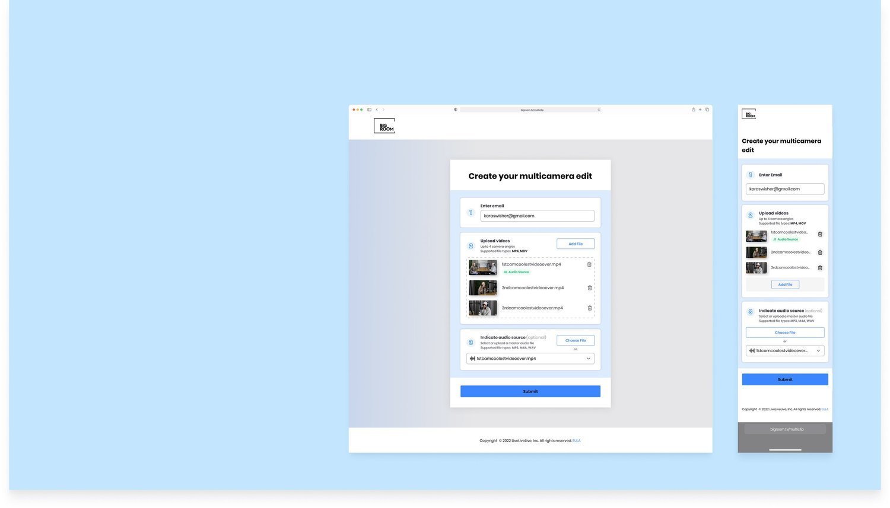
Problem
Video editing is time consuming and difficult to learn
Target Users
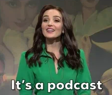
Podcasters — Primary User
Initially creating audio content they are now filming their sessions, producing filmed studio content or recording zoom meetings to keep up with platform / user expectations, add legitimacy to their brand, and reach a new user set. Create long form interview or communication content.
They feel that video editing takes up a lot of their time, which they would rather be spending ideating and writing content.
Ranging from small to large operations, some have professional studio set-ups, filming with cameras and utilizing a double audio system, while others are smaller and create at home, screen-recording over zoom, sometimes with an external high-quality microphone.
Pro-Creators — Secondary User
Hired to create content for social media and more. Experienced in content creation and very knowledgeable about equipment. Wants to automate the basic edits so can spend majority of time on more complex editing.
Amateur Content Creators — Secondary User
Create short form content for social media. Want to focus on creating more content rather than editing existing content. Has a backlog of videos. Video editing takes 1 - 2 days. Shoots with a DSLR.
Limitations
- Limited engineering power: 1 engineer
- Technical limitations - limit to what the current AI model can do
Opportunity / Solution
An easy to use AI video editing tool that automates the editing process for content creators
V1
Mobile App
After conducting initial market research by interviewing a range of professional podcasters and communication influencers to validate the problem and learn more about our target audience (podcasters turned youtubers shooting long format content) I got to work and created user flow maps, then wireframes, then a high fidelity prototype to use for user testing. This proof of concept was our hypothesis: that a mobile app where users could shoot a multi-person video on their phone and get a high quality multi-camera / multi-angle video back that was clean, edited, dynamic, and entertaining ready to post on social media would be the most useful for our audience shooting on their phone.
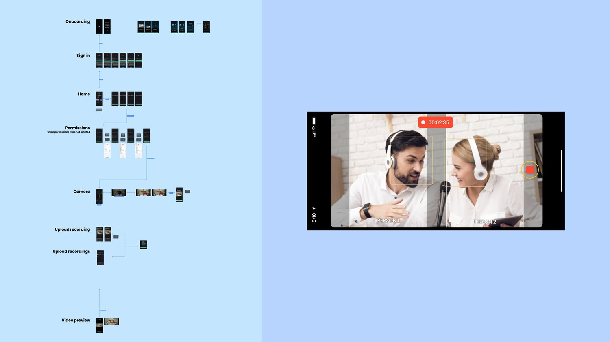
V2
Web App
“Verticalizer”
Conducted moderated usertesting with real podcasters, which unveiled a bigger need and important contextual factors.
- A vertical format was more valuable to them than horizontal to post on Tiktok, Instagram and Facebook stories.
- Amateurs recorded zoom meetings with computer
- Prosumers and pros used double system, shooting with a DSLR camera and even a separate audio recorder. Needed to go back and completely rethink our approach
- In dialogue with the pm and the CEO I proposed a web-app based solution where users could log in, upload a horizontal video and after a few minutes get back a perfectly edited vertical video ready to post on social media
User Research Key Findings
Users shoot with DSLRs not their phones and vertical format is more useful than horizontal for sharing to social media
Design Iteration
Design a web-based tool that uses ai to “verticalize” videos
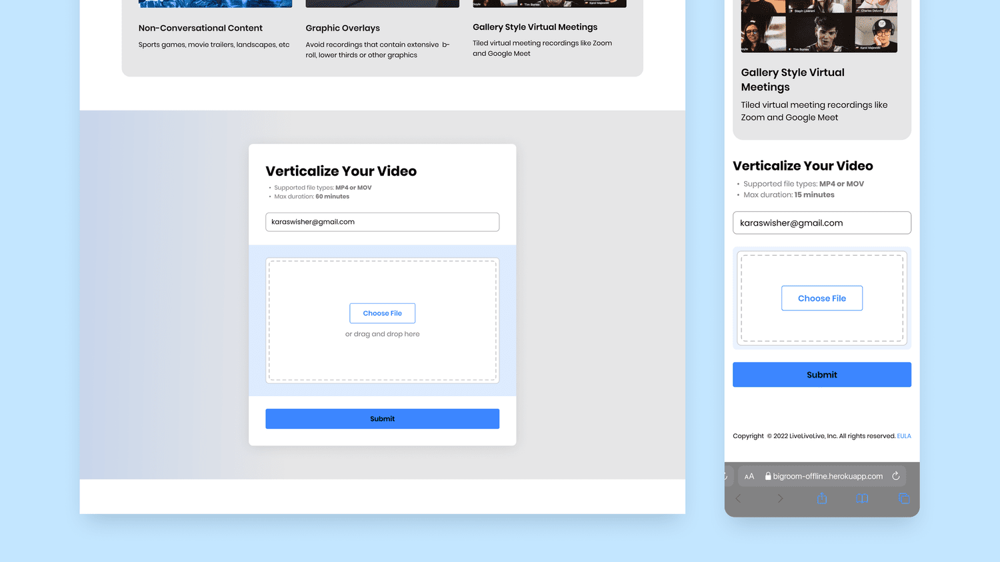
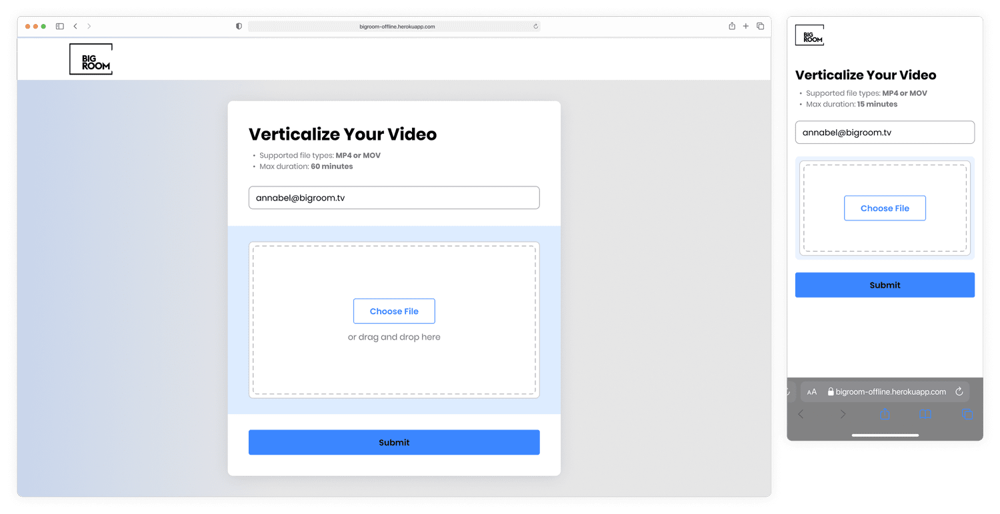
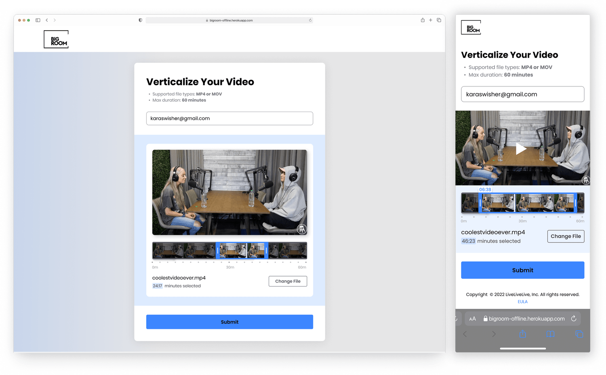
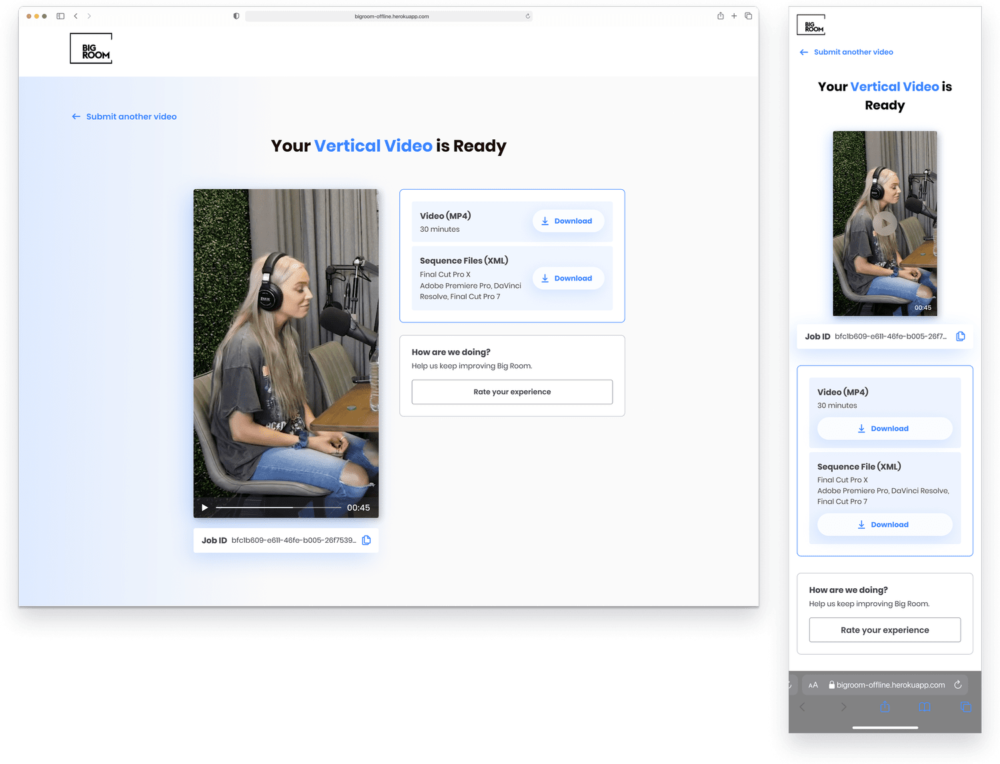
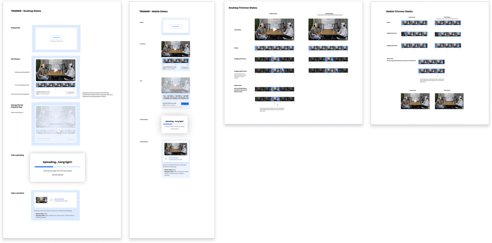

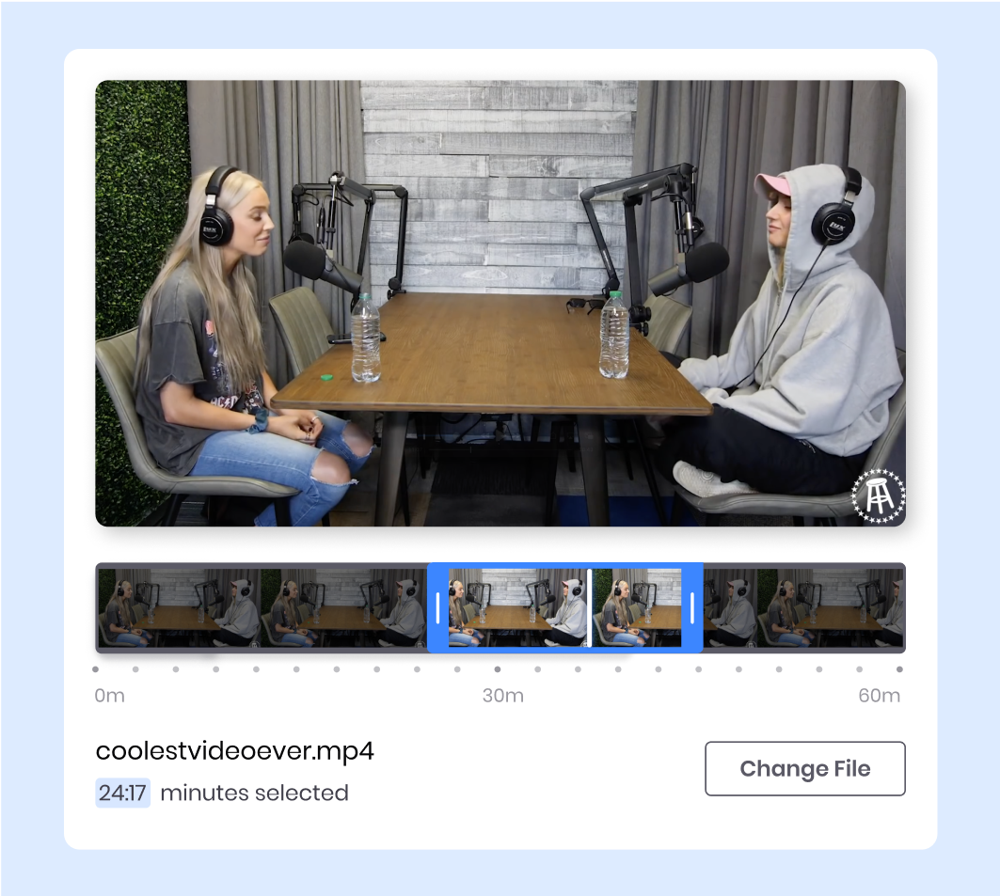
V2.5
Video Trimming
After another round of moderated testing, insights revealed that users needed to trim their video before uploading.
Design iteration: Add in video trimming tool. As big room will start charging by the minute, it is extremely useful for podcasters to be able select a part or trim down the video, selecting only whats necessary to keep costs down and only buy whats necessary making it more likely they will come back and use it again and again
V3
Multi-cam Editor
New Product
There was still a large unmet need with the Verticalizer for professional content creators. This user segment filmed with multiple cameras and a separate audio system and wanted to automate a part of their workload to cut down editing costs and speed up turn around time.
So the CEO, PM, and I had a brainstorming workshop and came up with the Multi-cam Editor, where a user can upload multiple camera angles from different cameras, select or upload a master audio source and get back a perfectly edited video (horizontal) for Youtube.
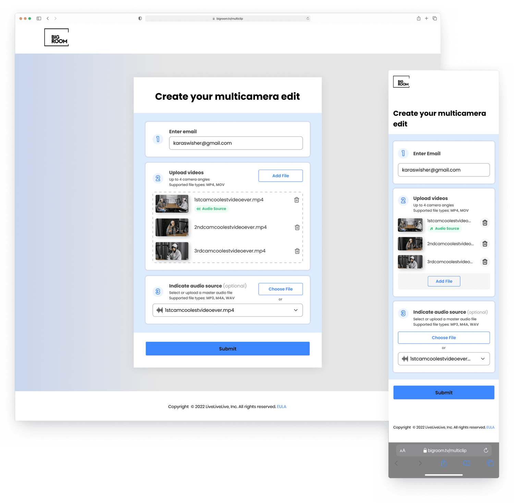
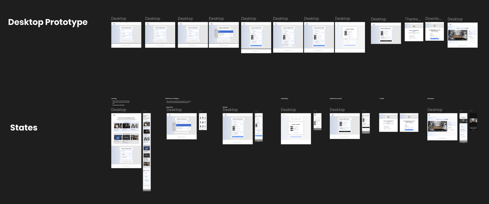
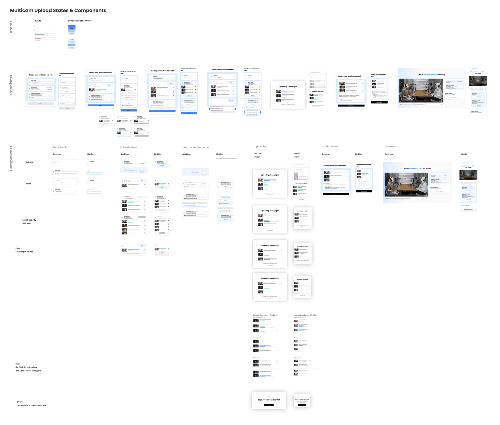
Multicamera edit final flow